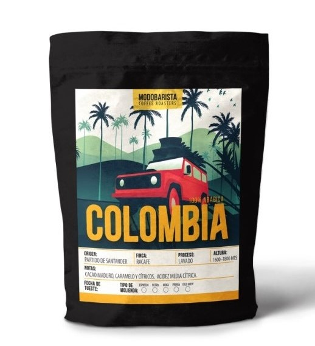

Variedades de café en grano
Aquí podrás visualizar las variedades de café de especialidad que ofrecemos en grano o molido. Una vez que hayas decidido qué café te gustaría probar, clickeá el botón "Encargar" para retirarlo por nuestro local o comunicate con el número de contacto por consultas con respecto a la variedad. ¡No te quedes sin la posibilidad de disfrutarlo todos los días en la comodidad de tu hogar!
Café Brasil Bourbon, Modo Barista
Varietal: Bourbon Rojo. Origen: Brasil - Minas Gerais. Finca: Campos Altos. Altura: 1200. Proceso: Natural.
Precio por 250gr: $1746
Café Colombia, Modo Barista
Varietal: Castilla Caturra Typica y Maragogipe. Origen: Colombia - Rio Negro - Partido de Santander. Finca: Racafe. Altura: 1600-1800. Proceso: Lavado.
Precio por 250gr: $1816
Café Costa Rica, Modo Barista

Varietal: Caturra - Catuai. Origen: Costa Rica - Valle Occidental. Finca: Coffee Suarez. Altura: 1350. Proceso: Red Honey.